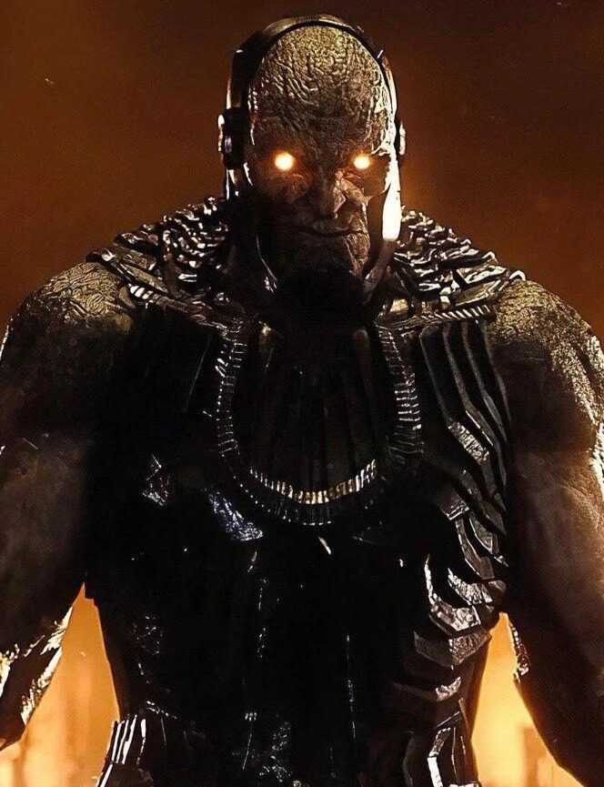

DARKSEID
 Darkseid é um supervilão poderoso que aparece nas histórias em quadrinhos publicadas pela editora americana DC Comics, geralmente descrito como uma das maiores ameaças do Universo DC. Foi criado pelo escritor e artista norte-americano Jack Kirby e apareceu pela primeira vez em Superman's Pal, Jimmy Olsen #134 (novembro de 1970). Como o governante tirano do planeta Apokolips, sua ambição é encontrar a Equação Antivida, com o qual tem a intenção de conquistar o universo e eliminar todo o livre arbítrio. Como um dos seres mais poderosos do Universo DC, o personagem se tornou um dos maiores inimigos do Superman e o maior adversário da Liga da Justiça. Tem sido destaque em outros meios de comunicação aprovados pela DC Comics, como filmes, séries de televisão, jogos de vídeo-game, e mercadorias, como bonecos de ação. Foi classificado em 6º lugar na lista dos 100 maiores vilões de quadrinhos de todos os tempos da IGN e em 23º lugar nos 100 maiores vilões de todos os tempos da Wizard. Foi dublado por Frank Welker na série animada Super Friends: The Legendary Super Powers Show e The Super Powers Team: Galactic Guardians, que se tornou sua primeira aparição em mídias além das histórias em quadrinhos. O personagem foi posteriormente retratado por Michael Ironside no universo animado DC, Andre Braugher em Superman/Batman: Apocalypse, e Steven Blum em Justice League: War, Reign of the Supermen e Justice League Dark: Apokolips War.